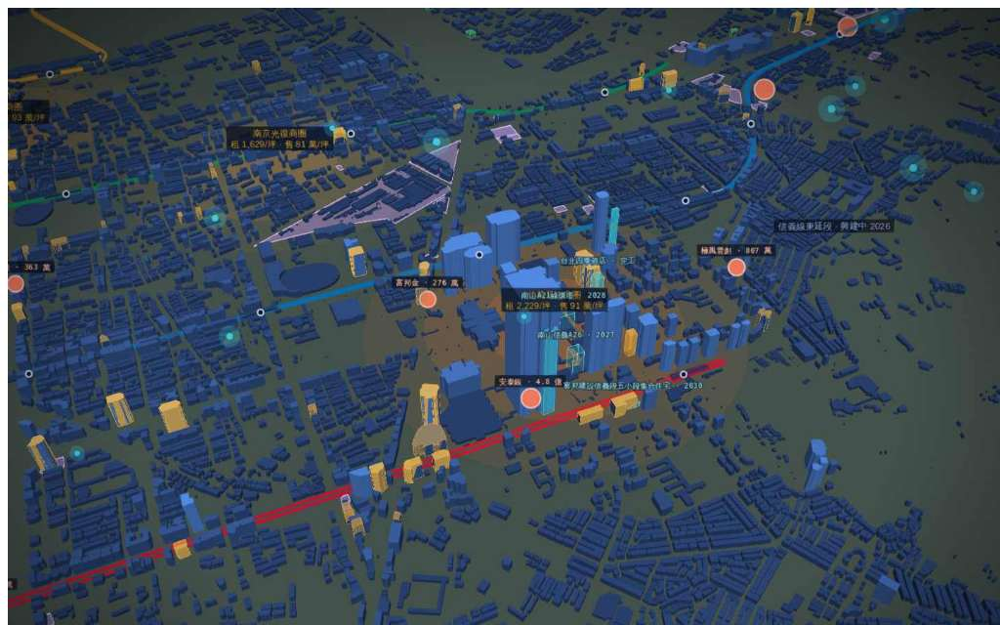

睿鏡 PeakLens
by PickPeak · FUNRAISE MCP
◎信義區 · 商辦 152 · 都更 71 · 法人交易 2925.0375N 121.5655E · 3.2 km · -42°
商辦存量 · buildings.get_building
台北101大樓
P 級
樓層101F / B5
使照2003 · 屋齡 23 年
實價租金均 4,526 元/坪/月 · 41 筆
捷運象山站 466 m
認證LEED 白金 · WELL 白金 · EEWH 鑽石
南山廣場A · 租 3,980/坪
安泰銀 · 取得4.8 億
睿鏡 · 回答
2 MCP 呼叫 · 384 ms · 來源可回查
台北101大樓：P 級商辦，101F／B5，2003 年取得使照，距象山站 466 m；近 12 月上市櫃交易 3 筆、4.9 億。
對城市說話：「台北101 的租戶是誰」「環繞一圈」…
送出